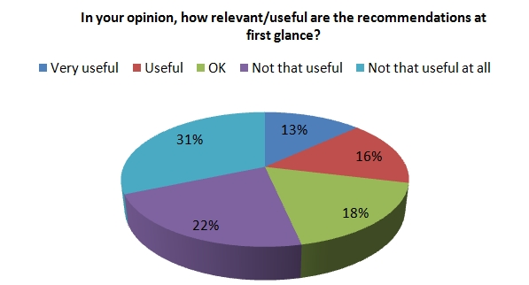
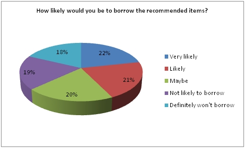

SALT: Evaluation
The project evaluated the hypothesis, writing:
Following internal in house testing the recommender was open to the users. In the last week of July 18 humanities postgraduates passed through the SALT testing labs, (11 PhD students, 3 taught Masters students and 4 research students). Lisa and I held three focus groups and grilled our potential users about the SALT recommender. The research methods used were designed to answer our objectives, with an informal discussion to begin with to find out how postgraduate students approach library research and to gauge the potential support for the book recommender. Following the discussion we began testing the actual recommender to answer our other research objectives which were:
- Does SALT give you recommendations which are logical and useful?
- Does it make you borrow more library books?
- Does it suggest to you books and materials you may not have known about but are useful and interesting?
As a team we agreed to set the threshold of the SALT recommender deliberately low, with a view to increasing this and testing again if results were not good. As our hypothesis is based on discovering the hidden long tail of library research we wanted the recommender to return results that were unexpected - research gems that were treasured and worthy items but had somehow been lost and only borrowed a few times.
42 searches in total were done on the SALT recommender and of those 42, 77.5% returned at least one recommendation, (usually many more) that participants said would be useful. (As an aside, one of the focus groups participants found something so relevant she immediately went to borrow it after the group has finished!)
However the deliberately low threshold may have caused some illogical returns. The groups were asked to comment on the relevance of the first 5 recommendations, but quite often it was the books further down the list that were of more relevance and interest. One respondent referred to it as a ‘Curate’s egg’ however, assured me this was in reference to some good and some bad. His first five were of little relevance, ‘only tangentially linked’, his 6th, 7th, 8th, 9th, 11th and even 17th recommendations were all ‘very relevant’. Unfortunately this gave disappointing results when the first 5 suggested texts were rated for relevance, as demonstrated in the pie chart below.

However the likelihood of borrowing these items gave slightly more encouraging results;

Clearly we've been keen on the threshold count. Lessons need to be learnt about the threshold number and this perhaps is a reflection of our initial hypothesis. We think that there would be much merit in increasing the threshold number and retesting.
On a positive note, initial discussions with the researchers (and just a reminder these are seasoned researchers, experts in their chosen fields familiar and long term users of the John Ryland’s University Research Library) told us that the recommender would be a welcome addition to COPAC and the library catalogue. 99% of the researchers in the groups had used and were familiar with Amazons recommender function and 100% would welcome a similar function on the catalogues based on circulation records.
Another very pertinent point, and I cannot stress this strongly enough, was the reactions expressed in regards to privacy and collection and subsequent use of this data. The groups were slightly bemused by questions regarding privacy. No one expressed any concern about the collection of activity data and its use in the recommender. In fact most assumed this data was collected anyway and encouraged us to use it in this way, as ultimately it is being used to develop a tool which helps them to research more effectively and efficiently.
Overwhelmingly, the groups found the recommender useful. They were keen that their comments be fed back to developers and that work should continue on the recommender to get the results right as they were keen to use it and hoped it would be available soon.